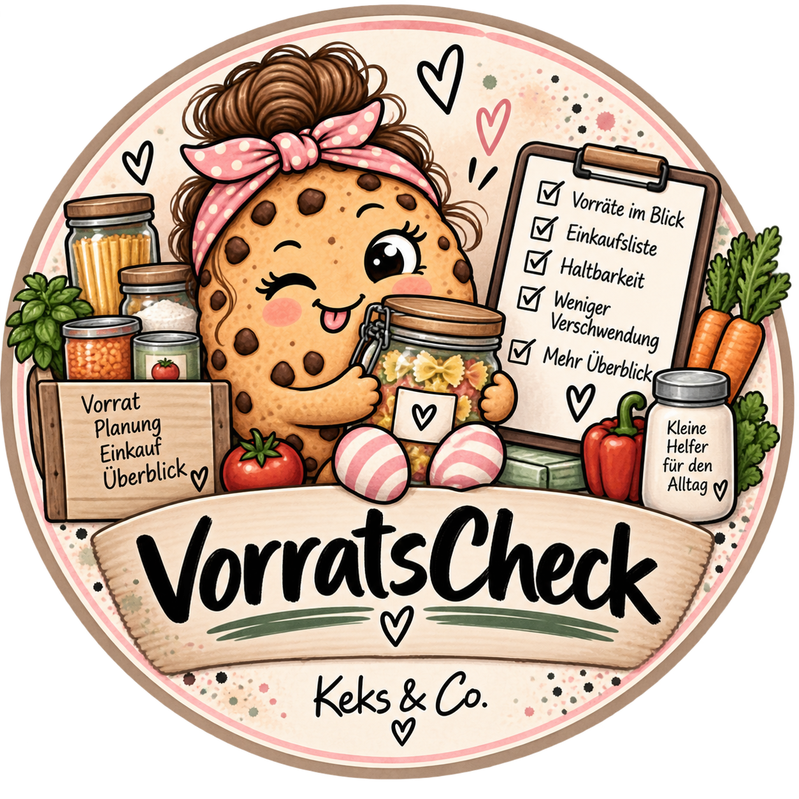

Bücher
Geschenkbücher, praktische Bücher und neue Ideen, die nach und nach ihren Weg zwischen zwei Buchdeckel finden.
GeschenkbücherKüche & AlltagWeitere Bücher
Hier wächst nach und nach die komplette Keks-&-Co.-Bücherwelt.
Bücher mit Persönlichkeit, praktische Apps für den Alltag und jede Menge Ideen, die irgendwann unbedingt raus mussten.
Von Geschenkbüchern zum Selbstgestalten bis zu praktischen Büchern für Küche, Alltag und alles, was mir sonst noch einfällt.
Geschenkbücher, praktische Bücher und neue Ideen, die nach und nach ihren Weg zwischen zwei Buchdeckel finden.
Hier wächst nach und nach die komplette Keks-&-Co.-Bücherwelt.
Keks & Co. bleibt garantiert nicht bei einer Buchart. Neue Themen, Reihen und Ideen kommen Stück für Stück dazu.
Ein Erinnerungsbuch zum Selbstgestalten für eine Hochzeit – gemacht für persönliche Worte, Fotos, Erinnerungen und den ganzen schönen Blödsinn, der von so einem Tag übrig bleiben soll.

Das Zusatzheft erweitert das Hochzeitsbuch um zusätzlichen Platz für weitere Gäste, Erinnerungen, Geschichten und Wünsche – passend zum Hauptbuch.
Apps für Dinge, die im Alltag wirklich gebraucht werden – übersichtlich, verständlich und ohne unnötigen Schnickschnack.
Bevor sie in den Play Store dürfen, müssen die Keks-&-Co.-Apps erst durch die Testphase. Deshalb werden aktuell noch Tester gesucht.

Vorräte, Einkauf und Preise im Blick behalten. Für einen Haushalt, in dem man lieber weiß, was da ist, bevor man es zum dritten Mal kauft.
Fertig entwickelt · Noch nicht im Play Store · Tester gesucht
Datenschutz zu VorratsCheck →Fixkosten, Haushaltsbuch und Sparziele an einem Ort. Damit man weiß, wohin das Geld eigentlich verschwunden ist – bevor das Konto es einem verrät.
Fertig entwickelt · Noch nicht im Play Store · Tester gesucht
Keks & Co. ist der Platz für meine Bücher, Apps und alles, was aus einer spontanen Idee irgendwann ein richtiges Projekt wird.
Manches ist praktisch. Manches ist zum Verschenken. Manches ist einfach entstanden, weil ich dachte: Warum gibt es das eigentlich nicht so, wie ich es haben möchte?
Und genau dann wird aus der Idee eben einfach was.
Datenschutzinformationen zu den Keks-&-Co.-Apps findest du direkt bei der jeweiligen App.